library("bayesrules") #data set: Pulse of the Nation
library("ggimage") #customize images for scatterpoint points
library("ggtext") #adorn ggplot text
library("gt") #great tables
library("infer") #streamlined code for inference tasks
library("janitor") #compute proportions easily
library("tidyverse") #tools for data wrangling and visualization
# school colors
princeton_orange <- "#E77500"
princeton_black <- "#121212"
# data set: Pulse of the Nation
data(pulse_of_the_nation)
pulse_df <- pulse_of_the_nation
# data set: SML 201 demographics survey
demo_df <- readr::read_csv("https://raw.githubusercontent.com/dsollberger/sml201slides/main/posts/04_categories/sml201survey.csv")SML 201
Libraries and Helper Functions
# helper function
vnorm <- function(x, mu = 0, sigma = 1, section = "lower"){
# bell curve
x_vals <- seq(mu - 4*sigma, mu + 4*sigma, length.out = 201)
y_vals <- dnorm(x_vals, mu, sigma)
df_for_graph <- data.frame(x_vals, y_vals)
# outline shaded regions
if(length(x) == 1){
shade_left <- rbind(c(x[1],0), df_for_graph |>
filter(x_vals < x[1]))
shade_right <- rbind(c(x[1],0), df_for_graph |>
filter(x_vals > x[1]))
}
if(length(x) == 2){
shade_between <- rbind(c(x[1],0),
df_for_graph |>
filter(x_vals > x[1] &
x_vals < x[2]),
c(x[2],0))
shade_tails <- rbind(df_for_graph |>
filter(x_vals < x[1]),
c(x[1],0),
c(x[2],0),
df_for_graph |>
filter(x_vals > x[2]))
}
if(section == "lower"){
bell_curve <- df_for_graph |>
ggplot(aes(x_vals, y_vals)) +
geom_polygon(aes(x = x_vals, y = y_vals),
data = shade_left,
fill = "#E77500",) +
geom_line(color = "gray50", linewidth = 2)
prob_val <- round(pnorm(x,mu,sigma), 4)
}
if(section == "upper"){
bell_curve <- df_for_graph |>
ggplot(aes(x_vals, y_vals)) +
geom_polygon(aes(x = x_vals, y = y_vals),
data = shade_right,
fill = "#E77500",) +
geom_line(color = "gray50", linewidth = 2)
prob_val <- 1 - round(pnorm(x,mu,sigma), 4)
}
if(section == "between"){
bell_curve <- df_for_graph |>
ggplot(aes(x_vals, y_vals)) +
geom_polygon(aes(x = x_vals, y = y_vals),
data = shade_between,
fill = "#E77500",) +
geom_line(color = "gray50", linewidth = 2)
prob_val <- round(diff(pnorm(x,mu,sigma)), 4)
}
if(section == "tails"){
bell_curve <- df_for_graph |>
ggplot(aes(x_vals, y_vals)) +
geom_polygon(aes(x = x_vals, y = y_vals),
data = shade_tails,
fill = "#E77500",) +
geom_line(color = "gray50", linewidth = 2)
prob_val <- round(1 - diff(pnorm(x,mu,sigma)), 4)
}
# plot bell curve
bell_curve +
labs(subtitle = paste0("Probability: ", prob_val),
caption = "SML 201", y = "") +
theme_minimal()
}Start
Goal: Estimate unknown population statistics
Objective: Deploy and interpret confidence intervals
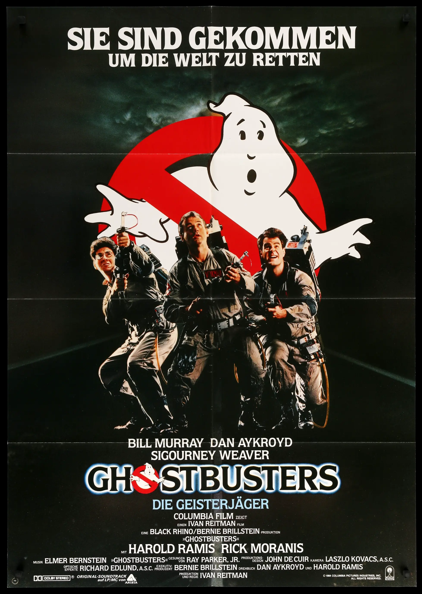
Old Methods
Scenario: Believe in Ghosts?
What proportion of people believe that ghosts exist?
source: Pulse of the Nation survey by Cards Against Humanity
Poll 1: September 2017
1000 observations
15 variables
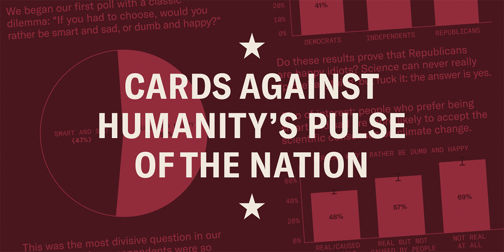
Normal Distribution
Walter Peck wants estimates to have at least 95 percent confidence!
# 2.5 and 97.5 percentiles
qnorm(c(0.025, 0.975))[1] -1.959964 1.959964vnorm(qnorm(c(0.025, 0.975)), section = "between") +
annotate("text", x = 0, y = 0.2, label = "95%",
color = "white", size = 15) +
labs(title = "Extracting a 95 Percent Interval",
x = "z") +
scale_x_continuous(breaks = c(-1.96, 1.96),
labels = c(-1.96, 1.96))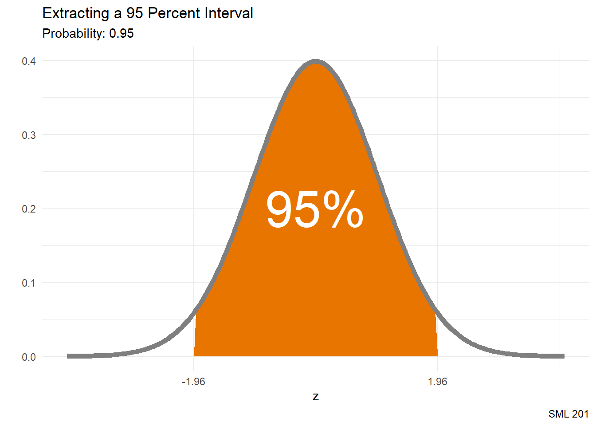
Sample Proportion
ghosts n percent
No 621 62.1%
Yes 379 37.9%
Total 1000 100.0%\[\hat{p} = 0.379\] \[n = 1000\]
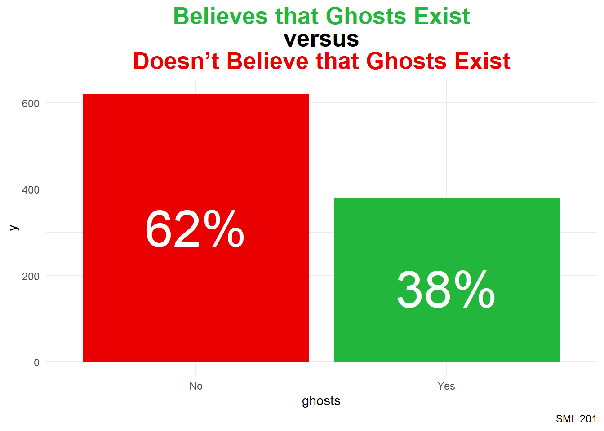
pulse_df |>
tabyl(ghosts) |>
adorn_totals("row") |>
adorn_pct_formatting()
title_string <- "<span style = 'color:#23b63c'>Believes that Ghosts Exist</span><br>versus<br><span style = 'color:#ea0000'>Doesn't Believe that Ghosts Exist</span>"
pulse_df |>
ggplot() +
geom_bar(aes(x = ghosts, fill = ghosts)) +
annotate("text", x = c("No", "Yes"), y = c(310, 170),
label = c("62%", "38%"),
color = "white", size = 15) +
labs(title = title_string,
caption = "SML 201") +
scale_fill_manual(values = c("#ea0000", "#23b63c")) +
theme_minimal() +
theme(legend.position = "none",
plot.title = element_markdown(hjust = 0.5,
face = "bold",
size = 20))Confidence Interval for a Proportion
\[\hat{p} \pm E, \quad\text{where } E = z_{\alpha/2}*\sqrt{\frac{\hat{p}(1 - \hat{p})}{n}} \text{ and } z_{\alpha/2} \approx 1.96\]
\[\left(0.3489, 0.4091\right)\]
We are 95 percent confident that the true population proportion of Americans that believe in ghosts is in between 34.89 and 40.91 percent.
# sample statistics
phat <- mean(pulse_df$ghosts == "Yes")
n <- sum(!is.na(pulse_df$ghosts))
# margin of error
E <- qnorm(0.975)*sqrt((phat*(1-phat))/n)
# confidence interval
phat + c(-1,1)*E[1] 0.3489314 0.4090686Scenario: How Old Are You?
Among the people that believe in ghosts, how old are you?
# A tibble: 2 × 3
ghosts xbar n
<fct> <dbl> <int>
1 No 50.3 621
2 Yes 48.0 379\[\bar{x} \approx 47.9525\] \[n = 379\]
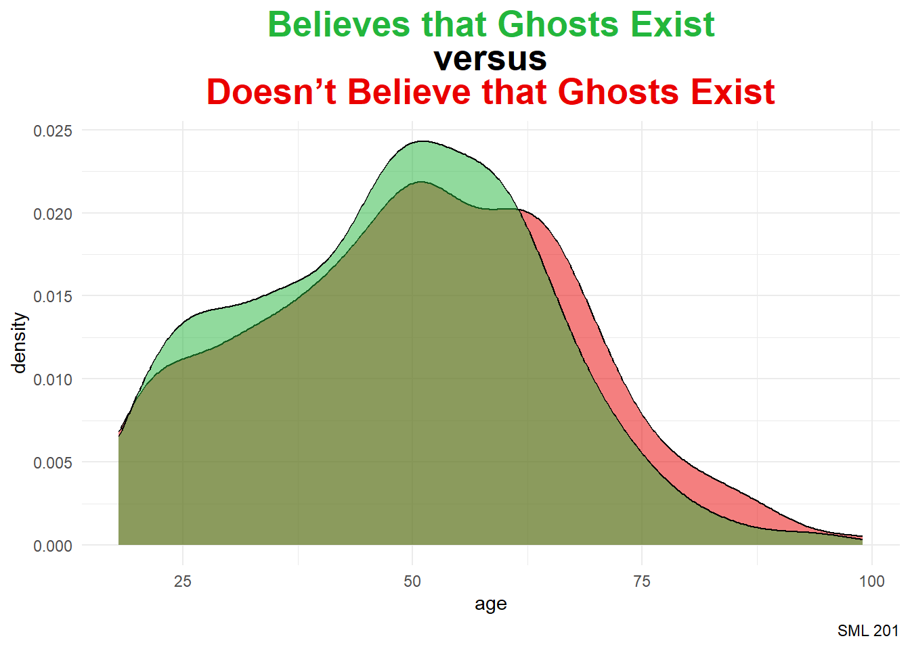
pulse_df |>
group_by(ghosts) |>
summarize(xbar = mean(age, na.rm = TRUE),
n = n())
title_string <- "<span style = 'color:#23b63c'>Believes that Ghosts Exist</span><br>versus<br><span style = 'color:#ea0000'>Doesn't Believe that Ghosts Exist</span>"
pulse_df |>
ggplot() +
geom_density(aes(x = age, fill = ghosts),
alpha = 0.5) +
labs(title = title_string,
caption = "SML 201") +
scale_fill_manual(values = c("#ea0000", "#23b63c")) +
theme_minimal() +
theme(legend.position = "none",
plot.title = element_markdown(hjust = 0.5,
face = "bold",
size = 20))Confidence Interval for a Mean
\[\bar{x} \pm E, \quad\text{where } E = t_{\alpha/2}*\frac{s}{n}\]
\[\left(46.3651, 49.5399\right)\]
We are 95 percent confident that the true population mean age for people that believe ghosts exist is in between 46.37 and 49.54 years old.
# subset
ghosts_yes <- pulse_df |> filter(ghosts == "Yes")
# sample statistics
xbar <- mean(ghosts_yes$age, na.rm = TRUE)
s <- sd(ghosts_yes$age, na.rm = TRUE)
n <- sum(!is.na(ghosts_yes$age))
# margin of error (here: "df" are degrees of freedom)
E <- qt(0.975, df = n - 1)*s/sqrt(n)
# confidence interval
xbar + c(-1,1)*E[1] 46.36511 49.53991Student t Distribution
The Student t distribution is an abstraction of the standard normal distribution that adjusts with wider tails to allow for more probability in the tails
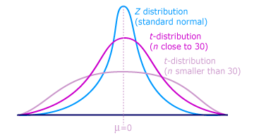
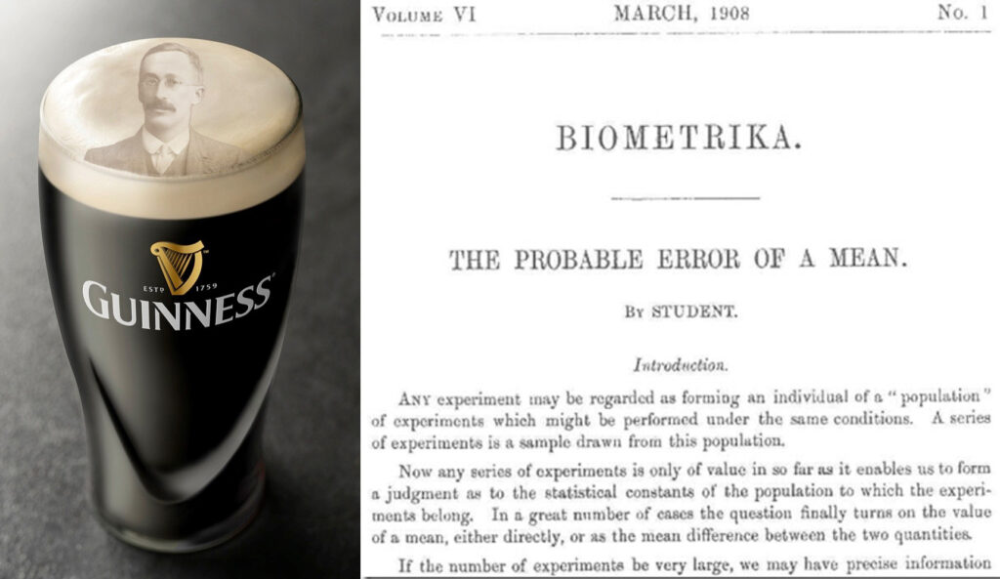
In advanced statistics, such as the adjusted \(R^{2}\) calculation for the coefficient of determination, the degrees of freedom are the difference between
- number of observations in the data
- number of independent variables being modeled
For this setting—estimating the true population mean—the degrees of freedom are simply
\[df = n - 1\]
Leaving the t distribution behind
For these calculations
\[\bar{x} \pm E, \quad\text{where } E = t_{\alpha/2}*\frac{s}{n}\]
- rely more on summary statistics rather than all of the gathered data
- “degrees of freedom” is a rather convoluted notion
- t-distribution is itself an approximation
- leads to more reliance on abstract probability distributions
- departs from frequentist probability philosophy
- more useful before calculators and computers
Modern Methods
infer
The developers of the infer package (and similar in other programming languages) streamlined coding syntax for these statistical tasks
- eases programming
- leverages simulations
Scenario: Princeton Politics
The survey question was
On a scale of 0 to 100—with 0 = Democrat and 100 = Republican—where are your political leanings?
Bootstrap Distribution
set.seed(201)
bootstrap_distribution <- demo_df |>
specify(response = politics) |>
generate(reps = 1000, type = "bootstrap") |>
calculate(stat = "mean")Warning: Removed 16 rows containing missing values.Endpoints (Standard Error)
xbar <- mean(demo_df$politics, na.rm = TRUE)
se_ci <- bootstrap_distribution |>
get_confidence_interval(level = 0.95,
type = "se",
point_estimate = xbar)Visualization
bootstrap_distribution |>
visualize() +
shade_confidence_interval(endpoints = se_ci,
color = princeton_black,
fill = princeton_orange) +
labs(title = "Political Leanings of Princeton Students",
subtitle = "Fall 2024",
caption = "SML 201",
x = "0: Democrat ... 100: Republican") +
theme_minimal() +
xlim(0, 100)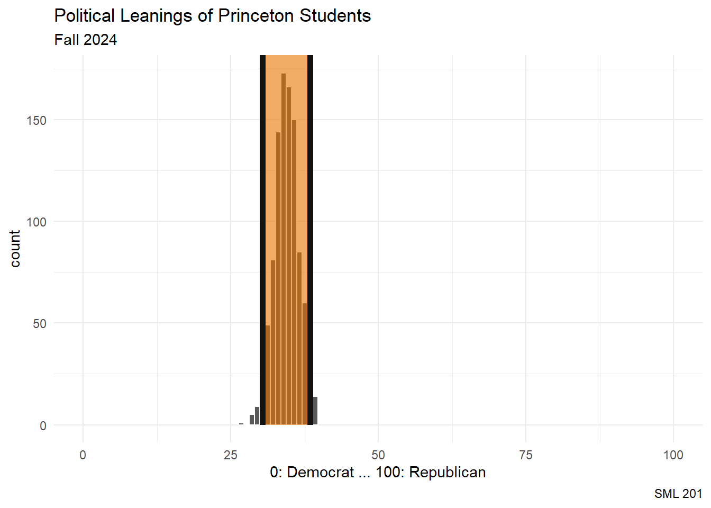
Inference
print(round(se_ci))# A tibble: 1 × 2
lower_ci upper_ci
<dbl> <dbl>
1 30 38In this survey question, “On a scale of 0 to 100—with 0 = Democrat and 100 = Republican—where are your political leanings?”, we are 95 percent confident that the true population mean for Princeton students is in between 30 and 38.
Discussion
This was a survey among SML 201 students
- not a representative or random sample of Princeton students
- self-reported data
Scenario: Pineapple on Pizza
The sample proportions (among those who were adamant) were
demo_df |>
filter(pineapplePizza %in% c("No!", "Yes!")) |>
tabyl(pineapplePizza) |>
adorn_totals("row") |>
adorn_pct_formatting() pineapplePizza n percent
No! 32 43.8%
Yes! 41 56.2%
Total 73 100.0%Bootstrap Distribution
set.seed(201)
bootstrap_distribution <- demo_df |>
filter(pineapplePizza %in% c("No!", "Yes!")) |>
specify(response = pineapplePizza, success= "Yes!") |>
generate(reps = 1000, type = "bootstrap") |>
calculate(stat = "prop")Endpoints (Percentile)
Building the confidence interval from percentiles is perhaps more reasonable than using the standard errors (and less code too).
per_ci <- bootstrap_distribution |>
get_ci(level = 0.95, type = "percentile")Visualization
bootstrap_distribution |>
visualize() +
shade_ci(per_ci,
color = princeton_black, fill = princeton_orange)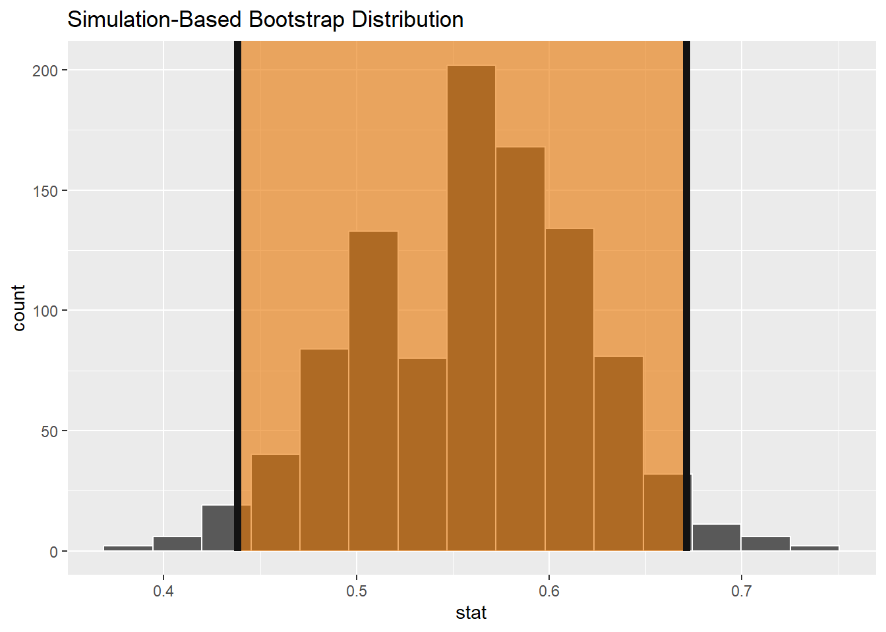
Inference
bootstrap_distribution |> get_ci()# A tibble: 1 × 2
lower_ci upper_ci
<dbl> <dbl>
1 0.438 0.671Among the Princeton students who have a strong opinion on whether or not pineapple is a good pizza topping, we are 95 percent confident that the true population proportion of students who like pineapple on pizza is in between 44 and 67 percent.
Discussion
This was a survey among SML 201 students
- relatively smaller sample size (n = 73 students)
- Since 0.5 is contained within the confidence interval, this result is not significally different than simply flipping a fair coin.
Theory
But why are we using careful language like “We are 95 percent confident …”?
Scenario: 20 Ghosts

Remember when we faced the Dungeon Master and their army of 20 ghosts? Under the equal probabilities of a uniform distribution, we knew that we would face off against \(\mu = 10.5\) ghosts, on average.

Experiment

We could resample the outcome space and see what proportion of confidence intervals capture the [population mean] ghost.
Simulation
set.seed(201)
# d20
d20_df <- data.frame(d20_outcomes = 1:20)
# create data frame and allocate space
df_for_graph <- data.frame(
id = 1:26,
a = rep(NA, 26),
b = rep(NA, 26),
result = rep(NA, 26),
result_color = rep(NA, 26)
)
for(i in 1:26){
# bootstrap_distribution <- d20_df |>
# specify(response = d20_outcomes) |>
# generate(reps = 50, type = "bootstrap") |>
# calculate(stat = "mean")
# CI <- bootstrap_distribution |> get_ci()
this_sample <- sample(1:20, size = 10, replace = TRUE)
xbar <- mean(this_sample)
s <- sd(this_sample)
n <- length(this_sample)
E <- qt(0.975, df = n-1)*s/sqrt(n)
# df_for_graph$a[i] <- unlist(CI[1])
# df_for_graph$b[i] <- unlist(CI[2])
df_for_graph$a[i] <- xbar - E
df_for_graph$b[i] <- xbar + E
df_for_graph$result[i] <- ifelse(
df_for_graph$a[i] < 10.5 & 10.5 < df_for_graph$b[i],
"captured",
"not captured"
)
df_for_graph$result_color[i] <- ifelse(
df_for_graph$a[i] < 10.5 & 10.5 < df_for_graph$b[i],
"#23b63c",
"#ea0000"
)
capture_rate <- mean(df_for_graph$result == "captured",
na.rm = TRUE)
this_plot <- df_for_graph |>
filter(id %in% 1:i) |>
ggplot() +
# geom_vline(aes(xintercept = 10.5),
# color = "#ab9f8f", linewidth = 2) +
geom_segment(aes(x = a, y = id,
xend = b, yend = id,
color = result_color)) +
geom_point(aes(x = a, y = id, color = result_color),
size = 3) +
geom_point(aes(x = b, y = id, color = result_color),
size = 3) +
geom_image(aes(x = 10.5, y = id),
image = "ghostbusters_ghost.png") +
labs(title = "Confidence Intervals",
subtitle = paste0("capture rate: ",
round(100*capture_rate, 2),
" percent"),
caption = "SML 201",
x = "ghosts", y = "interval number") +
scale_color_manual(values = c("#23b63c", "#ea0000")) +
theme_minimal() +
theme(legend.position = "none")
ggsave(paste0("images/CI_plot", LETTERS[i], ".png"), this_plot)
}
png_files <- Sys.glob("images/CI_plot*.png")
gifski::gifski(
png_files,
"CI_animation.gif", #output file name
height = 1600, width = 1600, #you may change the resolution
delay = 1/2 #seconds
)Quo Vadimus?
- Precept 7
- Coloring Assignment 2
- Project 3 (assigned Nov 11)
- Exam 2 (December 5)
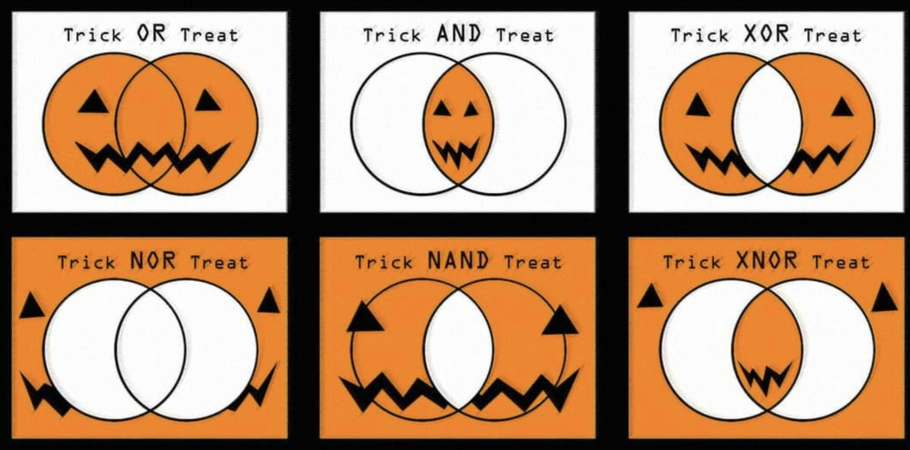
Footnotes
(optional) Additional Resources
Session Info
sessionInfo()R version 4.4.1 (2024-06-14 ucrt)
Platform: x86_64-w64-mingw32/x64
Running under: Windows 10 x64 (build 19045)
Matrix products: default
locale:
[1] LC_COLLATE=English_United States.utf8
[2] LC_CTYPE=English_United States.utf8
[3] LC_MONETARY=English_United States.utf8
[4] LC_NUMERIC=C
[5] LC_TIME=English_United States.utf8
time zone: America/New_York
tzcode source: internal
attached base packages:
[1] stats graphics grDevices utils datasets methods base
other attached packages:
[1] lubridate_1.9.3 forcats_1.0.0 stringr_1.5.1 dplyr_1.1.4
[5] purrr_1.0.2 readr_2.1.5 tidyr_1.3.1 tibble_3.2.1
[9] tidyverse_2.0.0 janitor_2.2.0 infer_1.0.7 gt_0.11.1
[13] ggtext_0.1.2 ggimage_0.3.3 ggplot2_3.5.1 bayesrules_0.0.2
loaded via a namespace (and not attached):
[1] tensorA_0.36.2.1 rstudioapi_0.17.0 jsonlite_1.8.8
[4] magrittr_2.0.3 magick_2.8.5 farver_2.1.2
[7] nloptr_2.1.1 rmarkdown_2.28 fs_1.6.4
[10] vctrs_0.6.5 minqa_1.2.8 base64enc_0.1-3
[13] htmltools_0.5.8.1 distributional_0.5.0 curl_5.2.1
[16] gridGraphics_0.5-1 StanHeaders_2.32.10 htmlwidgets_1.6.4
[19] plyr_1.8.9 zoo_1.8-12 commonmark_1.9.2
[22] igraph_2.0.3 mime_0.12 lifecycle_1.0.4
[25] pkgconfig_2.0.3 colourpicker_1.3.0 Matrix_1.7-0
[28] R6_2.5.1 fastmap_1.2.0 shiny_1.9.1
[31] snakecase_0.11.1 digest_0.6.35 colorspace_2.1-1
[34] crosstalk_1.2.1 labeling_0.4.3 fansi_1.0.6
[37] timechange_0.3.0 abind_1.4-8 compiler_4.4.1
[40] proxy_0.4-27 bit64_4.5.2 withr_3.0.1
[43] backports_1.5.0 inline_0.3.19 shinystan_2.6.0
[46] QuickJSR_1.4.0 pkgbuild_1.4.4 MASS_7.3-60.2
[49] gtools_3.9.5 loo_2.8.0 tools_4.4.1
[52] httpuv_1.6.15 threejs_0.3.3 glue_1.7.0
[55] nlme_3.1-164 promises_1.3.0 gridtext_0.1.5
[58] grid_4.4.1 checkmate_2.3.2 reshape2_1.4.4
[61] generics_0.1.3 gtable_0.3.5 tzdb_0.4.0
[64] class_7.3-22 hms_1.1.3 xml2_1.3.6
[67] utf8_1.2.4 pillar_1.9.0 markdown_1.13
[70] yulab.utils_0.1.7 vroom_1.6.5 posterior_1.6.0
[73] later_1.3.2 splines_4.4.1 lattice_0.22-6
[76] survival_3.6-4 bit_4.5.0 tidyselect_1.2.1
[79] miniUI_0.1.1.1 knitr_1.48 gridExtra_2.3
[82] V8_6.0.0 groupdata2_2.0.3 stats4_4.4.1
[85] xfun_0.48 rstanarm_2.32.1 matrixStats_1.4.1
[88] DT_0.33 rstan_2.32.6 stringi_1.8.4
[91] ggfun_0.1.7 yaml_2.3.8 boot_1.3-30
[94] evaluate_1.0.1 codetools_0.2-20 ggplotify_0.1.2
[97] cli_3.6.2 RcppParallel_5.1.9 shinythemes_1.2.0
[100] xtable_1.8-4 munsell_0.5.1 Rcpp_1.0.12
[103] parallel_4.4.1 rstantools_2.4.0 dygraphs_1.1.1.6
[106] bayesplot_1.11.1 lme4_1.1-35.5 scales_1.3.0
[109] xts_0.14.0 e1071_1.7-14 crayon_1.5.3
[112] rlang_1.1.4 shinyjs_2.1.0
Example Callout Block
note, tip, warning, caution, or important